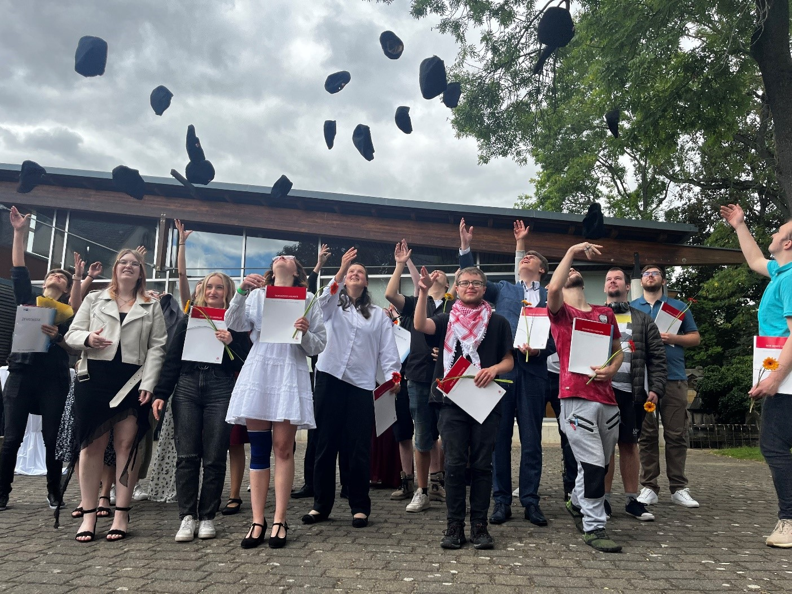
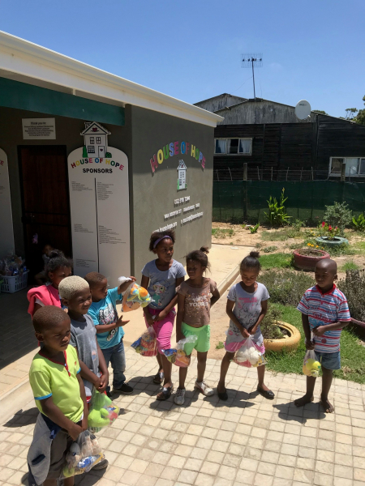
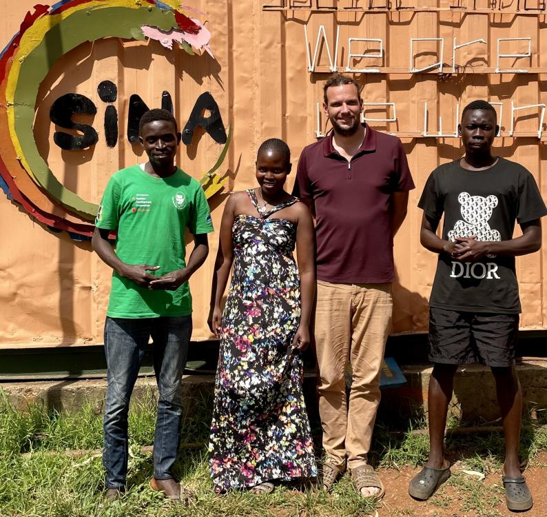

PROJEKTE & WIRKUNG
Viele Ausgangspunkte.
Ein gemeinsames Anliegen.
Junge Menschen brauchen Chancen, die zu ihrem Leben passen. Unsere Projekte geben Halt, machen Stärken sichtbar und öffnen Wege in Bildung und Beruf.

BEGLEITUNG & BERUFSVORBEREITUNGDon Bosco Sachsen
Wenn der direkte Weg zu viel wird, hilft ein geschützter Rahmen beim nächsten Schritt.
Die Projektgeschichte entdecken ↗
HALT & STÄRKENHouse of Hope and Glory
Eine Mahlzeit, ein Buch, ein Schachzug: Unterstützung beginnt auf unterschiedlichen Wegen.
Die Projektgeschichte entdecken ↗ AUSBILDUNG & BERUF
AUSBILDUNG & BERUFCooktastic
Praktische Ausbildung eröffnet Wege in die Gastronomie und zu eigenem Einkommen.
Die Projektgeschichte entdecken ↗
EIGENINITIATIVE & UNTERNEHMERTUMSINA
Junge Menschen entwickeln aus Herausforderungen vor Ort eigene unternehmerische Lösungen.
Projekt auf bisheriger Website ↗Weitere Projekte aus dieser Region finden Sie im Projektverzeichnis unten.
WEITERE PROJEKTE & BISHERIGE FÖRDERUNGEN
Unser Engagement
hat viele Gesichter.
Hier bleiben auch kleinere Projekte und frühere Förderungen zugänglich. Die Links führen zu den ausführlichen Berichten auf der bisherigen Website.
- 1. BI-LOG Charity Golfturnier CHANCE JUGEND CUP
- Asante
- Beratungsbus der Mangege gGmbH
- Bonnievale-Schachturnier
- Chance-Jugend stiftet mobile Streetballanlage in Chemnitz
- Chapeau Claque
- Cooktastic
- Die Chance-Jugend-Fähre
- Don Bosco Jugendwerk Bamberg: Inobhutnahme
- Don Bosco Sachsen
- Don Bosco School of Life, Kapstadt
- Ebenezer Skills Development Centre
- Einzelfallhilfe: Brückenausbildung in der Manege Berlin
- Entwicklung kleiner Bauernhöfe unter weiblichen Familienvorständen in ländlichen townships in Manzini, Swaziland
- Fahrradhaus Don Bosco Jugendwerk Bamberg
- Franschhoek Hospitality Academy & Learning Centre
- Fußballprojekt – Future Stars
- Förderung von Therapieplätzen bei A-L-F e.V.
- Hope & Glory Soccer Tournament
- House of Hope and Glory (HoH)
- Ich werde Zeitzeuge
- Junior Soccer Plettenberg Bay, Südafrika
- Ki.ku Bamberg – Kinderkultur
- Leseunterricht im HoH
- Life Choices – Family Affairs
- Masizame Kinderheim
- Salesian Institue Youth Projects
- Schachunterricht im HoH
- Schüler.Bilden.Zukunft
- SINA
- SKF – AK Sexuelle Gewalt
- Spende für das neue Bällebad
- St. Josephs Home - Adopt a Bed for one year
- Straßenkinderprojekt Trivandrum, Indien/Bangalore
- Ukraine-Hilfe Berlin e.V.
- Warme Mahlzeit im HoH
- Zirkuspädagogische Angebote des Zirkus Giovanni
IHRE MÖGLICHKEITEN